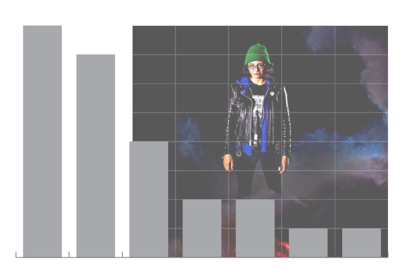

Over a decade ago, Marisa Dal Santo set the bar for a skateboarding part by a woman: A bar that most would argue hasn’t been met since. Nearly the entirety of her career accolades to that point had been from success on the contest circuit, and she was more or less in the unpaid nebula between Flow and Am with Zero since being sponsored by them in 2006.
Thanks in part to the Chief’s infamously intense results-oriented program of encouragement and pressure, Marisa pushed her limits for nearly two years of California filming without any confirmation she would even be included in the next Zero video. She literally broke herself for this part and left it all in the ring.
Unfortunately, the same forces that drove her to make something special in Strange World also drove her off the path of skateboarding for video glory. That’s the problem with breaking oneself for the clip… one gets broken. She turned down professional status, broke one wrist after the other, and decided she would healthier, wealthier, and wiser to return to skating with friends back home in Illinois while continuing her contest success. Marisa won the X-Games (several times), won our hearts with in Strange World, and then pretty much dropped off the skateboarding radar.
Let’s crush the numbers for Marisa Dal Santo in Zero's 2009 video, Strange World:
Total Running Time: 1 minute 42 seconds
Total Number of distinct Tricks: 23
Total Number of Clips: 22
Total Number of Lines: 3
Total Number of Tricks in Lines: 6
Marisa’s part is unmistakably the product of Jamie Thomas and Zero. That is to say, it is a front-to-back barrage of big tricks down oft-fisheye distorted sets of stairs, with the occasional peppering of a long lens replay angle or line.
The 3 lines are all just 2-trick affairs, with the first trick serving as a preamble to the subsequent banger. The part isn’t all that unique to the larger video, filmmaker, or brand. The part’s significance is its uniqueness to the skater’s gender.
With all respect to pioneers like Jamie Reyes, Elissa Steamer, and Alexis Sablone, the heaviness of Marisa’s tricks paired with the bludgeoning style of Zero editing was still a new thing for women’s skateboarding at the time. This isn’t to say other women weren’t capable of making a Zero-style part. Heck, Elissa literally has a part in this same video. But, like Steamer’s prior Toy Machine cuts which were focused on ledges and lines, the sheer weight of the whole hadn’t come together with nearly the force that happened here with Dal Santo.
Above is a count of all 25 of the tricks in the part. If we remove the 2 tricks that were shown from a second angle, we can calculate that there are 20 different tricks on display. And even this number is misleading, as the 3 repeated tricks were still pretty distinct. Both ollies were big timers, but one stood out for being a precision huck onto a narrow landing. The backside crooked grinds were split among two different styles of obstacles: a bench to start a line and then between the kinks of a double-set rail. And one of those backside flips was just a prelude to the opening slam.
It is quite a diverse trick set, which is a surprising comment considering there are no switch tricks. And no nollie tricks. And no fakie tricks. For a skater who is very regular footed, how does she keep it fresh?
Marisa’s secret recipe for expanding what would otherwise have been a relatively simple bag of tricks is to get handsy. Kickflips get grabbed several ways. Already gnarly rail grinds get some extra seasoning with a tail or cannonball grab. Instead of seeing another big ollie, we get an airwalk. Factoring in the boneless spin and yoinking that dump truck into the bank, Marisa grabs the board on about a third of her tricks.

The Obstacle Chart delivers exactly what one would expect from a Zero joint: big Rails and big Drops. The flatground moves are set-ups for bigger tricks in lines and the hip trick results in that glorious slam. This part is strictly stunt work with one very notable exception…

No discussion of Strange World is complete without a reference to the most joyous up-stairs no comply heelflip ever.
In an attempt to quantify the gnar, let’s count some stairs:
This chart (hopefully) illustrates the some of the sets Marisa faced in this part. While we have included the previously mentioned up-stairs trick, we have decided to not try to estimate the stair equivalent for the big block and gap drops.
What we see here is a cluster of tricks in the 8 to 10 stair range. This is right where the serious risk of ‘sacking’ and/or skull cracking takes hold. As mentioned in our tricks discussion, Marisa continuously upped the ante on these rails by mixing grabs with the grinds and flipping into the frontside boardslide. And both ollies had some real hazards with the landings to contend with. Just look at this Joey Shigeo photo of Marisa’s 13-stair ollie from the video!
More Numbers
- 9 - Number of tricks performed in a cast or wrist guard of some kind
- 7 : 2 - Ratio of kickflip tricks to heelflip tricks
- 3 - Number of tricks into banks
- 2 - Number of ‘Baker Makers’
- 1 - Number of slams in the part
- 3 - Number of Marisa slams in the opening montage of Strange World
- 0 - Number of tricks in slow motion
In the decade plus since Strange World happened, Marisa continued competing and occasionally winning major contests while releasing a few tricks for Blood Wizard among other local video parts. She had a Zero board released as part of their 20th anniversary thing in 2017, and most recently was announced as a new member of the Fancy Lad skate team. She also owns and operates an online vintage clothing store.
BONUS MAR:
We all got ripped off.
For all the dominance Marisa’s Strange World part there was at least a minute of additional footage that absolutely could and should have been in the video. Fortunately, most of this footage was released in 2010 as a Innes Clothing Welcomes part (and then again in a ‘Best Of’ part for the Zero anniversary).
Follow Marisa at @mar_dal_santo and her Gen X-travaganza clothing shop at @genx_travaganza.
Follow 4Ply at @4plymag on the gram and twitter. Hit us up and let us know what other parts’ numbers you would like to see crushed.
This article used photos by Michael Burnett, Joey Shigeo, Bart Jones, and others we couldn't figure out.